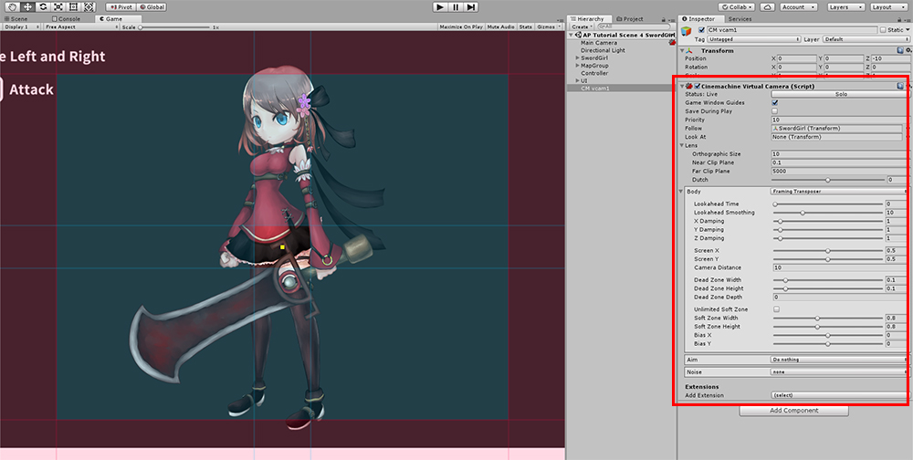
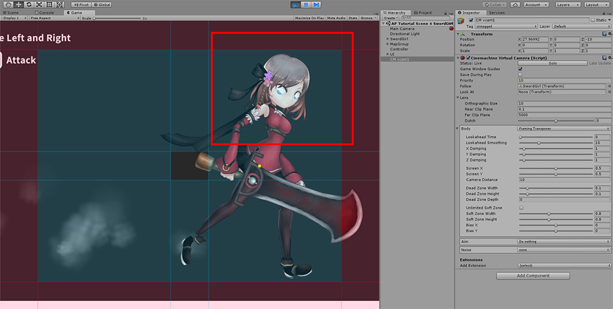
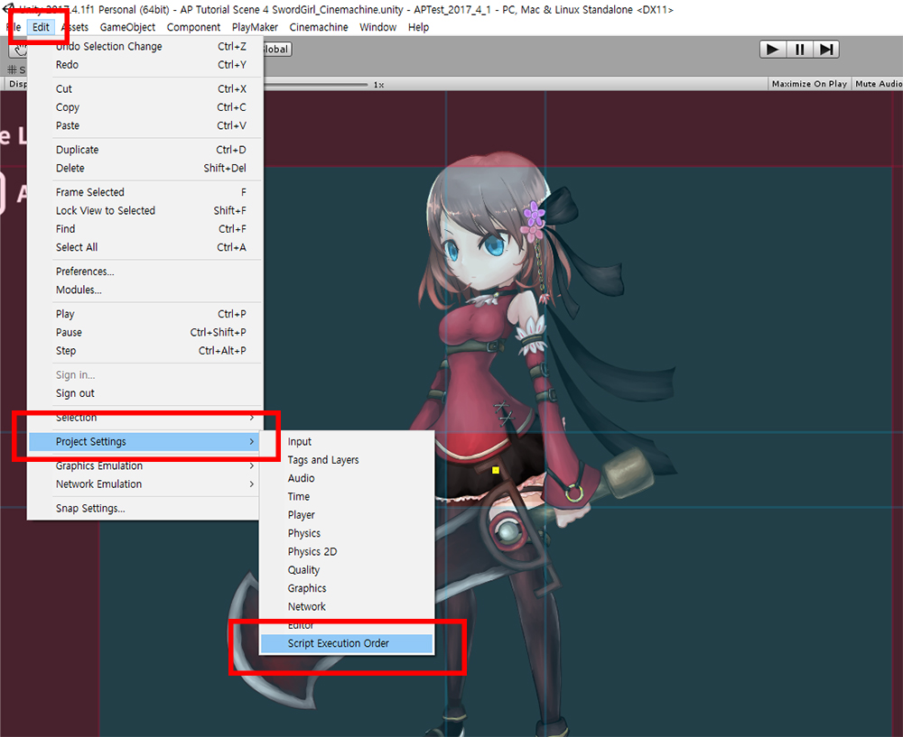
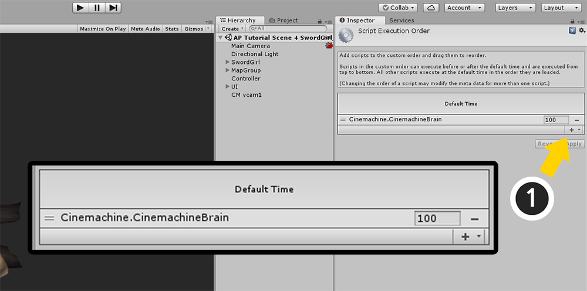
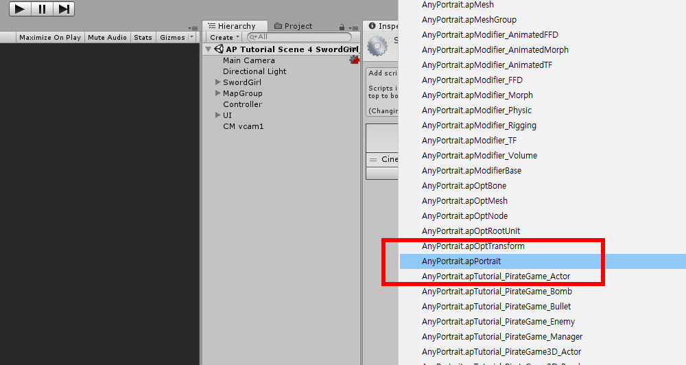
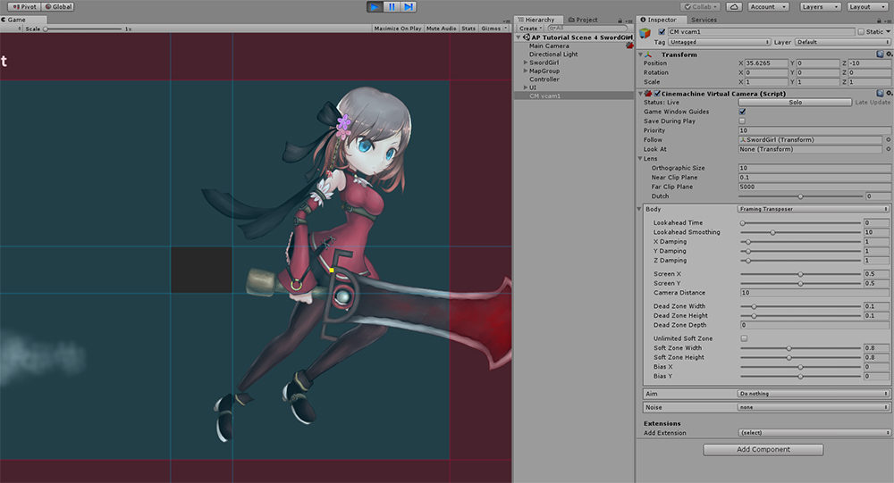

AnyPortrait > 메뉴얼 > 다른 에셋과 연동시 실행 순서 문제
다른 에셋과 연동시 실행 순서 문제
1.0.0
AnyPortrait와 다른 에셋을 같이 사용하여 게임 등을 만들 때 완벽하게 호환되지 않는 문제가 있을 수 있습니다.
에셋마다 독특한 특징이 있기 때문에, 모든 에셋과 AnyPortrait가 서로 호환된다고 볼 수는 없습니다.
다만, 저희 팀은 유니티의 기능을 이용하는 에셋들과의 호환성을 염두에 두고 개발하기 때문에,
몇가지 상황에 대해서는 적절한 해결 방법을 통해서 호환성 문제를 해결할 수 있습니다.
이 페이지에서는 "스크립트 실행 순서 (Script Execution Order)"에 의한 문제를 해결하는 방법에 대해서 설명합니다.
Unity에서 제공하는 Cinemachine이라는 에셋을 예시로 들었습니다.

AnyPortrait의 데모에 Cinemachine을 연동한 화면입니다.
Cinemachine으로 카메라를 제어할 수 있습니다.

게임을 실행하면 AnyPortrait로 만든 캐릭터의 눈이 이상하게 렌더링됩니다.
AnyPortrait의 클리핑 마스크(Clipping Mask) 기능이 제대로 동작하지 않는 것입니다.
AnyPortrait는 카메라의 위치, 방향, 설정에 따라서 렌더링을 어떻게 해야할지 결정합니다.
클리핑 마스크, 빌보드, Perspective 연산 등이 여기에 해당합니다.
그러나 Cinemachine으로 카메라를 제어하는 로직과 AnyPortrait의 카메라 계산 로직이 충돌하여 제대로 렌더링이 되지 않는 것입니다.
유사한 로직이 서로 충돌하는 경우, 대체로 AnyPortrait의 스크립트가 더 나중에 실행되도록 만들면 문제가 해결될 수 있습니다.

유니티의 메뉴에서 Edit > Project Settings에서 Script Execution Order를 실행합니다.
유니티 에디터의 버전에 따라서 위 화면과 다를 수 있지만, Project Settings을 실행하면 Script Execution Order 메뉴가 동일하게 존재합니다.

다른 에셋이 설치되었다면 Script Execution Order 화면에서 Default Time 외에 해당 에셋의 실행 순서가 추가되어 있을 수 있습니다.
Cinemachine의 스크립트가 Default Time보다 이후에 실행되도록 설정된 것을 위 화면에서 볼 수 있습니다.
AnyPortrait는 Cinemachine보다 나중에 스크립트가 실행되어야 합니다.
(1) + 버튼을 누릅니다.

AnyPortrait.apPortrait를 선택합니다.

AnyPortrait가 다른 에셋보다 나중에 실행되도록 만듭니다.
(1) 다른 에셋들보다 큰 값의 실행 순서를 입력합니다.
(2) Apply 버튼을 누릅니다.

게임을 실행하면 이제 문제가 해결되어 정상적으로 렌더링이 됩니다.
다른 에셋과의 호환성에 관하여
AnyPortrait는 기본적인 유니티의 메시 렌더러(Mesh Renderer)에 관한 에셋이므로,
유니티의 기본적인 기능이나 일반적인 에셋들과의 호환성을 어느정도 가지고 있습니다.
그렇지만 유니티의 최신 기능이나 다양한 에셋들은 점점 더 다양해지고 전문화되면서 호환성을 보장하지 못할 수 있습니다.
저희 팀에게 해당 기능이나 에셋과의 호환성을 문의 주신다면, 저희가 확인하여 안내해드리겠습니다.
필요한 경우 저희팀은 그 이슈에 대해서 업데이트에 반영하겠습니다.
- 문의 페이지